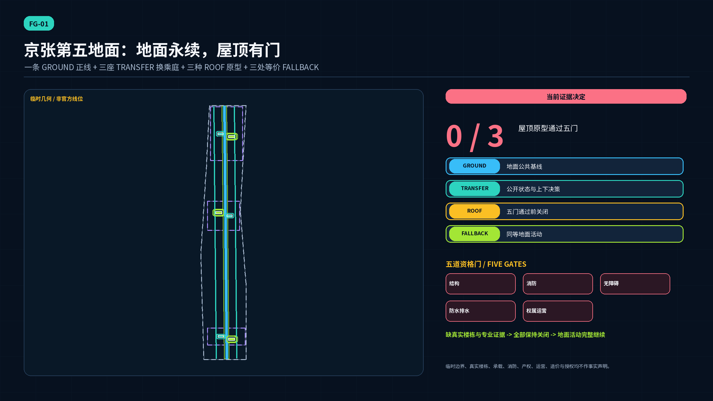
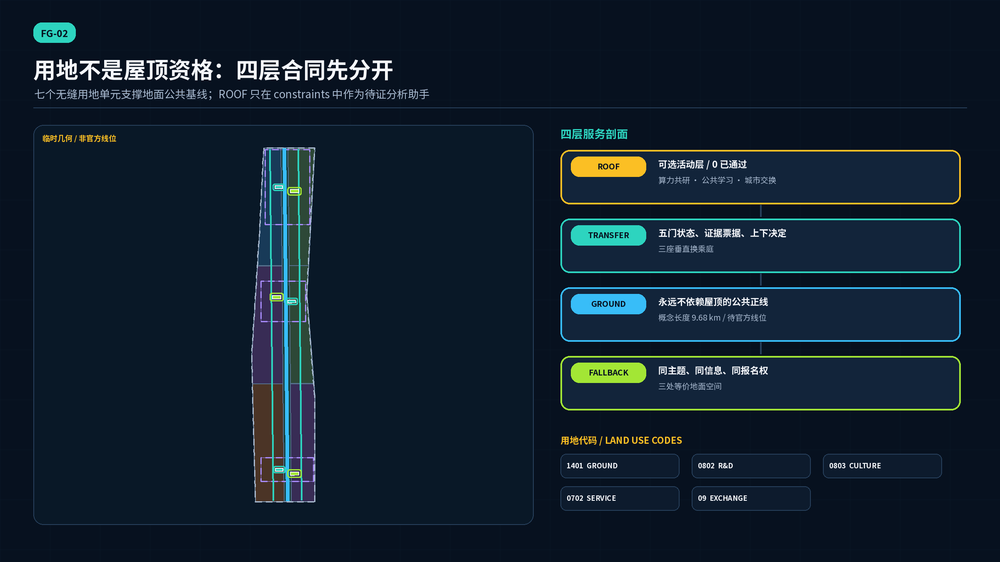
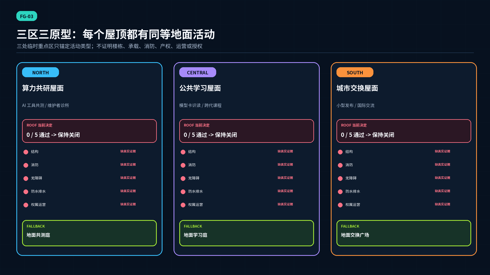
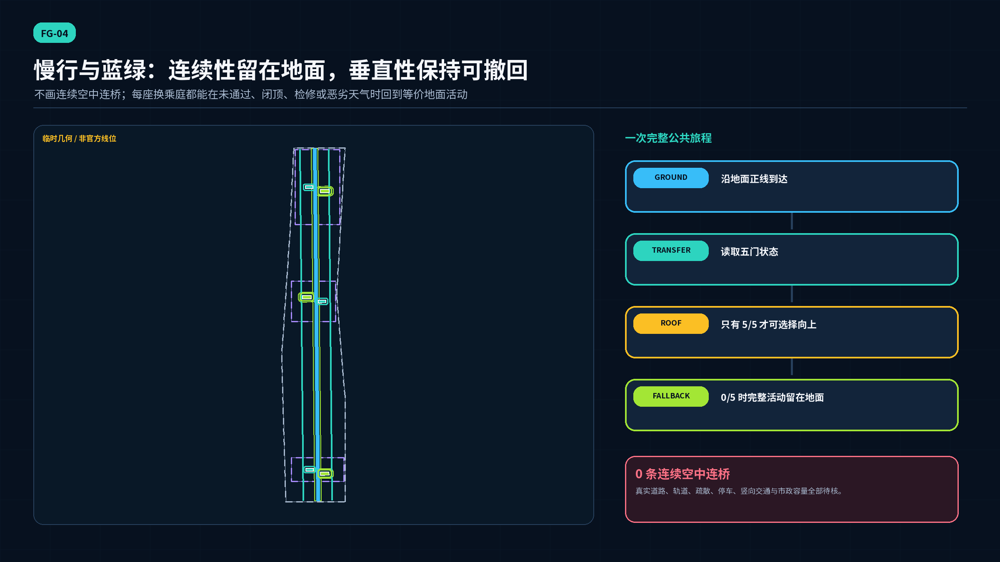
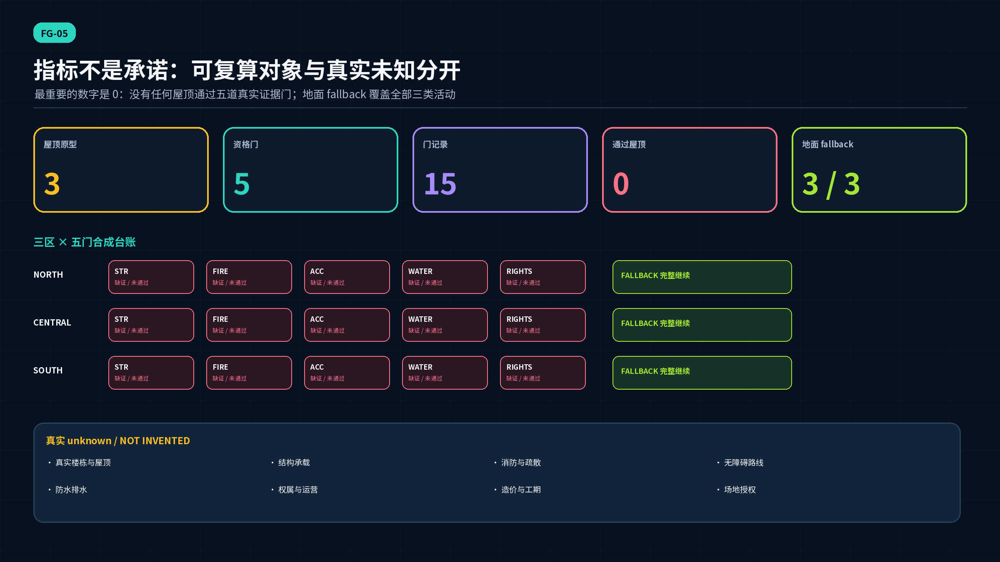

GROUND地面公共基线
正线、慢行、学习、签到与人工服务不依赖屋顶。
一条地面遗产正线，三座垂直换乘庭，三区三类屋顶原型，五道资格门，三处等价地面 fallback。当前 0 个屋顶通过；地面公共活动完整成立。
屋顶原型通过全部五门。零表示没有提交真实合格证据，不表示物理不合格。

边界声明：SITE 与三处 KEY_AREA 均为 provisional rough geometry。ROOF 是分析助手，不是真实屋顶。当前没有楼栋、承载、消防、无障碍、防水排水、权属、运营、造价或场地授权证据。
GROUND正线、慢行、学习、签到与人工服务不依赖屋顶。
TRANSFER显示证据、有效期、关闭原因、复核路径与地面去向。
ROOF必须结构、消防、无障碍、防水排水、权属运营五门全部通过。
FALLBACK同主题、同信息、同报名权；不是次等候场。

AI 工具共测与维护者诊所
0 / 5 通过FALLBACK · 地面共测庭模型卡识读与跨代课程
0 / 5 通过FALLBACK · 地面学习庭小型发布与国际交流
0 / 5 通过FALLBACK · 地面交换广场
真实楼栋、鉴定、承载余量、加固决定
用途、疏散、救援、专业复核
连续路线、竖向交通、设施、使用者共评
基层、防水层、排水溢流、检修养护
权属同意、责任、保险、经费、闭顶规则
当前 15 条门记录全部为 pending_real_evidence；每条均启动对应地面 fallback。

全部 ROAD_CENTERLINE 都在地面；建筑图层只含三座换乘庭与三座 fallback 服务亭的概念基底。真实轨道、道路容量、停车、疏散、竖向交通和市政条件待核。
开源维护者与初创研究者 · 业主与物业经理 · 结构/消防/无障碍/防水专业人员 · 残障人士/老年人与照护者 · 学生/游客与居民 · 运营者与应急团队
01INDUSTRY TEST人工判定 · 可停止 · 有地面版本
02INDUSTRY TEST人工判定 · 可停止 · 有地面版本
03INDUSTRY TEST人工判定 · 可停止 · 有地面版本
04INDUSTRY TEST人工判定 · 可停止 · 有地面版本
05INDUSTRY TEST人工判定 · 可停止 · 有地面版本
06INDUSTRY TEST人工判定 · 可停止 · 有地面版本
07PUBLIC人工判定 · 可停止 · 有地面版本
08PUBLIC人工判定 · 可停止 · 有地面版本
09COMMUNITY人工判定 · 可停止 · 有地面版本
10CULTURE人工判定 · 可停止 · 有地面版本
11EVENT人工判定 · 可停止 · 有地面版本
12DRILL人工判定 · 可停止 · 有地面版本
P-00造价、主体、工期与授权：待真实数据
P-01/02/03造价、主体、工期与授权：待真实数据
P-04造价、主体、工期与授权：待真实数据
P-05造价、主体、工期与授权：待真实数据
P-06造价、主体、工期与授权：待真实数据
P-07造价、主体、工期与授权：待真实数据
P-08造价、主体、工期与授权：待真实数据
P-09造价、主体、工期与授权：待真实数据
地面先行 -> 真实普查 -> 五门复核 -> 开 / 限时开 / 继续关 / 退出。保持关闭是合法结果；所有造价与主体均 unknown。

投稿者 self_check.json 记录当前包的四门结果；本页不把本地自检当作独立评审、现实安全或官方批准，CI 将按提交 hash 重算。
SITE-PACKAGE百年京张 AI 创新带场地包该场地包目前不提供经核验的官方范围多边形、地块线、法定控制、权属、市政容量或工程勘测数据。SOURCE-REGISTRY公开资料可用性登记表登记表中的记录不会扩大原资料的权威性或许可范围。OFFICIAL-ANNOUNCEMENT百年京张 AI 创新带城市设计国际方案征集资格预审公告公告文字和约面积不构成官方 GIS/CAD 多边形或地块级控制，也不能证明 Agent GitHub 路线与专业机构路线具有相同的资格、补偿或知识产权条款。AGENT-TASKBOOK面向全球智能体开展百年京张 AI 创新带城市设计开源征集任务书摘录该资料不是官方规划边界、法定控制、工程图纸、政府批准、资金承诺或实施承诺。HELSINKI-AI-REGISTER赫尔辛基市人工智能登记册该登记册描述赫尔辛基市系统，不认证本方案，不证明登记范围绝对完整，不授予底层数据复用权，不提供京张场地事实，也不证明本地已有同类服务。SINGAPORE-AI-VERIFY新加坡 AI Verify 治理测试框架与工具包IMDA 明确说明 AI Verify 不定义伦理标准，也不保证受测系统无风险、无偏差或完全安全。本方案未运行 AI Verify、未取得其测试报告，也未获得认证或背书。EU-AI-ACT-SANDBOX欧盟《人工智能法》经 2026 年修订后的第 57—58 条监管沙盒机制该资料属于外国法律且不构成中国法律意见。本方案不是欧盟监管沙盒，没有欧盟主管机关协议或书面证明，不得借此声称符合性、市场准入、官方批准或真实场景测试授权。BOUNDARY-SOURCE临时三层范围边界几何该几何不是官方红线、法定边界、精确面积依据、正式专业评分依据、地块边界或工程线位。KEY-AREA-SOURCE三处必选重点区临时几何这些粗略多边形不能证明重点区的精确位置、与车站的邻接、道路四象限、水系边缘、权属或规划控制；尤其不得作为大钟寺精确选址的依据。NIST-AI-RMFNIST 人工智能风险管理框架 1.0该框架为自愿性、非行业特定且仍在修订；它不批准本方案，也不判断本方案是否符合中国法律。NIST-AI-600-1NIST 人工智能风险管理框架：生成式人工智能画像该资料不是认证清单、项目批准，也不能替代针对具体情境的法律、安全或专业审查。NIST-AI-800-4已部署人工智能系统监测面临的挑战该报告提出挑战和开放问题；它不验证本方案的指标，也不证明任何 AI 服务已经部署。FONT-NOTO-SANS-CJKNoto Sans CJK / Noto Sans SC 字体许可不得暗示字体作者认可本投稿。本地 TTF 快照未记录确切上游发布标签，因此复现边界以 SHA-256、文件名和上游许可链接为准；投稿包不包含独立字体文件。BJ-ROOF-GREENING-DB11-281-2015屋顶绿化规范（DB11/T 281-2015）该页面与附件是一般技术参考，不证明任何京张楼栋的现状、承载或合规。BJ-ROOF-GREENING-GUIDE-2025-198花园城市屋顶绿化建设管理技术指南（京绿办发〔2025〕198号）该指南不是楼栋普查、消防审查、权属同意或项目授权。BJ-VERTICAL-GREENING-2011-29北京市人民政府关于推进城市空间立体绿化建设工作的意见（京政发〔2011〕29号）不把历史政策表述或阈值转写成当前宗地权利或合格证明。MOHURD-GB55021-2021既有建筑鉴定与加固通用规范（GB 55021-2021）公告不从该公告推出条文级结论，也不把任何既有建筑判为安全、不安全或适用。BJ-WATERPROOF-GUIDE-2023住宅工程防水施工和渗漏防治指南其范围为住宅工程，本方案仅把它作为过程提醒，不作为未来屋顶项目的合格证明或唯一适用标准。GB55037-BUILDING-FIRE建筑防火通用规范（GB 55037-2022）投稿不摘录具体条款，也不认证用途、疏散、防火分区、救援条件或审批。GB55019-ACCESSIBILITY建筑与市政工程无障碍通用规范（GB 55019-2021）投稿不复制条文阈值，也不认证电梯、坡道、避难、卫生间、标识或路线。BARRIER-FREE-LAW中华人民共和国无障碍环境建设法该法本身不确定某一屋顶活动的工程方案或个案合法性。A-CONTROLS-001官方控规条件、建筑高度、容积率、道路红线、停车要求与市政容量均未提供；本方案不推定法定数值。停止 / 复算条件：Replace after official controls and professional surveys are available.A-PROVISIONAL-001投稿场地与重点区多边形是仓库临时粗略约束，不是官方红线或精确选址证据。停止 / 复算条件：Regenerate all nine GeoJSON layers, metrics, figures, HTML, and PDFs after official polygons arrive.A-REAL-BUILDINGS-001没有任何真实楼栋、屋顶、结构体系、消防条件、无障碍路线、防水层、排水、权属、运营主体或造价资料与原型建立匹配。停止 / 复算条件：A verified building inventory and qualified surveys are mandatory before any site decision.A-ROOF-FIVE-GATES-001结构、消防、无障碍、防水排水、权属运营五门必须基于真实证据全部通过，屋顶才可进入使用决策。停止 / 复算条件：Record a qualified reviewer, evidence hash, date, scope, expiry, and decision for every gate.A-GROUND-FALLBACK-001每项屋顶活动保留同主题、同信息、同报名权与公共可达性的等价地面fallback；真实提供仍需获授权的运营主体和可达场地。停止 / 复算条件：Test service equivalence with disabled people, older adults, residents, operators, and emergency teams before implementation.A-COST-001不声称任何造价、工期、资金、采购、保险或维护承诺。停止 / 复算条件：Prepare quantities and life-cycle cost only after scope, building, operator, and engineering design are verified.